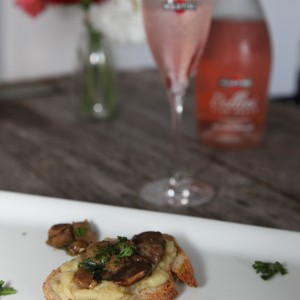

Bruschetta aux champignons

Aujourd’hui je vous retrouve avec une nouvelle recette que j’ai déjà hâte de refaire pour le nouvel an. Il s’agit (comme le titre l’indique) de ma recette de bruschetta aux champignons et caviar d’aubergines.
A l’heure où vous me lisez je suis « normalement » quelque part entrain de me balader dans New-York mais je ne vous avais pas oublié et avant de partir nous avons plutôt bien mangé et notamment quelques petites recettes que je me devais de partager avec vous. Vous connaissez sans doute maintenant mon amour infaillible pour les bruschettas (pour ceux qui ne savent pas, tous les vendredis ou presque à la maison c’est bruschetta!!) alors aujourd’hui je vous en propose une toute nouvelle version avec des champignons!
Si vous avez suivi, depuis le mois d’août je propose des recettes spéciales pour l’apéritivo (l’apéritif à l’italienne) afin d’accompagner un cocktail Martini (cette fois-ci servie avec un Martini Royale Rosato pour rester dans l’esprit des fêtes!). L’apéritivo c’est ce moment chaleureux où tout le monde se retrouve (amis, famille…) pour boire un verre autour de pleins d’assiettes remplies de bonnes choses à partager et à déguster! C’est comme ça que j’aime prendre l’apéro moi aussi et je me suis dit que cette bruschetta aux champignons ferait parfaitement l’affaire et je sais pas vous (vous me direz si vous tentez!) mais moi j’ai adoré la préparer et surtout la dévorer!!
Cette année pour le réveillon du nouvel an je pense que nous allons faire un apéritif avec plein de petites assiettes avec des préparations à picorer et je peux vous dire que cette bruschetta aux champignons fera clairement partie de mon menu tellement elle a eu du succès les dernières fois où je l’ai préparée. Côté champignons faites vous plaisir car en ce moment il y en a pas mal et des bons! Prenez des cèpes ou un mélange de champignons forestiers par exemple mais il faut avoir le goût et le parfum si caractéristique des vrais bons champignons.
Je vous laisse maintenant avec la recette et je vous souhaite une belle semaine en attendant de vous retrouver très vite avec d’autres gourmandises 🙂
NB : Toutes les photos sont les miennes à l’exception de la photo du cocktail (dans le corps de la recette) qui a été prise par le photographe de Martini : Olivier Hellard.
Ingrédients
- Champignons (cèpes, bollets, giroles etc...) - 450g
- Caviar d'aubergines - 8 càs
- Vin blanc - 1 bouchon
- Persillade - 1 càc
- Huile d'olive
- Pain de campagne - 4 tranches moyennes
- Oignons - 1 gros oignon ou deux petits
- Sucre (cassonade pour moi mais le sucre blanc convient bien)) - 1 càs et demi
- Vinaigre balsamique - 4 càs
- Ail - 1 gousse
Instructions
- Peler vos oignons
- Coupez-les en fines lamelles
- Laissez-les fondre dans une poêle contenant un peu d'huile d'olive (pendant 5 minutes environ)
- Quand vos oignons deviennent translucides ajouter le sucre
- Laisser cuire à feu doux pendant environ 15 bonnes minutes en remuant de temps en temps
- Sortir du feu et reserver
- Faire cuire vos champignons dans une poêle contenant un peu d'huile d'olive sur feu moyen
- Ajouter un bouchon de vin blanc et laisser cuire jusqu'à évaporation de l'alcool Pour ceux qui cuisinent sans alcool vous pouvez sauter cette étape
- Ajouter un peu de persillade, laisser cuire encore quelques minutes (2-3 min)
- Réserver
- Faites griller vos pains
- Facultatif (il faut aimer l'ail) : ailler vos pains
- Déposer une couche de caviar d'aubergines
- Une couche d'oignons confits
- Terminer par une couche de champignons
- Déguster sans plus attendre!!

Les tips de la communauté
Très apprécié, recette bien garnie et visuellement attrayante. Les lecteurs aiment particulièrement la garniture généreuse et la qualité des photos.
Astuces
- Bien garnir les bruschettas généreusement
- Les photos de qualité sont essentielles pour cette recette
- Parfait pour un apéritif élégant
Variantes suggérées
- bruschetta, hi, hi !! 😉